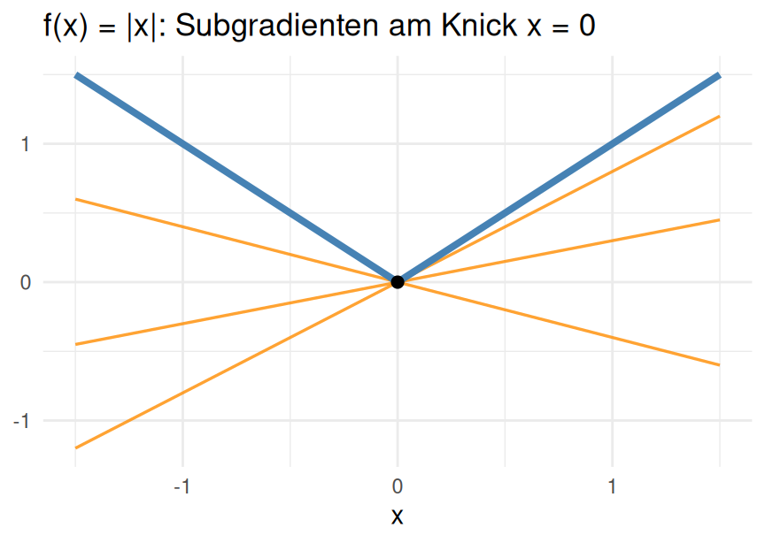
Fortgeschrittene mathematische Methoden in der Statistik
fabian.scheipl@lmu.de)\[ \definecolor{fmmgreen}{RGB}{0,158,115} \definecolor{fmmblue}{RGB}{0,114,178} \definecolor{fmmred}{RGB}{213,94,0} \definecolor{fmmorange}{RGB}{230,159,0} \definecolor{fmmpurple}{RGB}{158,87,213} \newcommand{\ind}{\unicode{x1D7D9}} \newcommand{\R}{{\mathbb{R}}} \newcommand{\N}{{\mathbb{N}}} \newcommand{\Q}{{\mathbb{Q}}} \newcommand{\C}{\mathbb{C}} \newcommand{\P}{\mathbb{P}} \newcommand{\Z}{{\mathbb{Z}}} \newcommand{\E}{{\mathbb{E}}} \newcommand{\K}{{\mathbb{K}}} \newcommand{\L}{\mathbb{L}} \newcommand{\F}{{\mathbb{F}}} \newcommand{\G}{\mathbb{G}} \newcommand{\S}{\mathbb{S}} \newcommand{\D}{{\mathbb{D}}} \newcommand{\bnull}{{\boldsymbol{0}}} \newcommand{\bzero}{{\boldsymbol{0}}} \newcommand{\ba}{{\boldsymbol{a}}} \newcommand{\bb}{{\boldsymbol{b}}} \newcommand{\bc}{{\boldsymbol{c}}} \newcommand{\bd}{{\boldsymbol{d}}} \newcommand{\be}{{\boldsymbol{e}}} \newcommand{\bg}{{\boldsymbol{g}}} \newcommand{\bh}{{\boldsymbol{h}}} \newcommand{\bi}{{\boldsymbol{i}}} \newcommand{\bj}{{\boldsymbol{j}}} \newcommand{\bk}{{\boldsymbol{k}}} \newcommand{\bl}{{\boldsymbol{l}}} \newcommand{\bn}{{\boldsymbol{n}}} \newcommand{\bo}{{\boldsymbol{o}}} \newcommand{\bp}{{\boldsymbol{p}}} \newcommand{\bq}{{\boldsymbol{q}}} \newcommand{\br}{{\boldsymbol{r}}} \newcommand{\bs}{{\boldsymbol{s}}} \newcommand{\bt}{{\boldsymbol{t}}} \newcommand{\bu}{{\boldsymbol{u}}} \newcommand{\bv}{{\boldsymbol{v}}} \newcommand{\bw}{{\boldsymbol{w}}} \newcommand{\bx}{{\boldsymbol{x}}} \newcommand{\by}{{\boldsymbol{y}}} \newcommand{\bz}{{\boldsymbol{z}}} \newcommand{\bA}{{\boldsymbol{A}}} \newcommand{\bB}{{\boldsymbol{B}}} \newcommand{\bC}{{\boldsymbol{C}}} \newcommand{\bD}{{\boldsymbol{D}}} \newcommand{\bE}{{\boldsymbol{E}}} \newcommand{\bF}{{\boldsymbol{F}}} \newcommand{\bG}{{\boldsymbol{G}}} \newcommand{\bH}{{\boldsymbol{H}}} \newcommand{\bI}{{\boldsymbol{I}}} \newcommand{\bJ}{{\boldsymbol{J}}} \newcommand{\bK}{{\boldsymbol{K}}} \newcommand{\bL}{{\boldsymbol{L}}} \newcommand{\bM}{{\boldsymbol{M}}} \newcommand{\bN}{{\boldsymbol{N}}} \newcommand{\bO}{{\boldsymbol{O}}} \newcommand{\bP}{{\boldsymbol{P}}} \newcommand{\bQ}{{\boldsymbol{Q}}} \newcommand{\bR}{{\boldsymbol{R}}} \newcommand{\bS}{{\boldsymbol{S}}} \newcommand{\bT}{{\boldsymbol{T}}} \newcommand{\bU}{{\boldsymbol{U}}} \newcommand{\bV}{{\boldsymbol{V}}} \newcommand{\bW}{{\boldsymbol{W}}} \newcommand{\bX}{{\boldsymbol{X}}} \newcommand{\bY}{{\boldsymbol{Y}}} \newcommand{\bZ}{{\boldsymbol{Z}}} \newcommand{\tagqed}{\tag*{$\blacksquare$}} \newcommand{\Acal}{{\mathcal{A}}} \newcommand{\Bcal}{{\mathcal{B}}} \newcommand{\Ccal}{{\mathcal{C}}} \newcommand{\Dcal}{{\mathcal{D}}} \newcommand{\Ecal}{{\mathcal{E}}} \newcommand{\Fcal}{{\mathcal{F}}} \newcommand{\Gcal}{{\mathcal{G}}} \newcommand{\Hcal}{{\mathcal{H}}} \newcommand{\Ical}{{\mathcal{I}}} \newcommand{\Jcal}{{\mathcal{J}}} \newcommand{\Kcal}{{\mathcal{K}}} \newcommand{\Lcal}{{\mathcal{L}}} \newcommand{\Mcal}{{\mathcal{M}}} \newcommand{\Ncal}{{\mathcal{N}}} \newcommand{\Ocal}{{\mathcal{O}}} \newcommand{\Pcal}{{\mathcal{P}}} \newcommand{\Qcal}{{\mathcal{Q}}} \newcommand{\Rcal}{{\mathcal{R}}} \newcommand{\Scal}{{\mathcal{S}}} \newcommand{\Tcal}{{\mathcal{T}}} \newcommand{\Ucal}{{\mathcal{U}}} \newcommand{\Vcal}{{\mathcal{V}}} \newcommand{\Wcal}{{\mathcal{W}}} \newcommand{\Xcal}{{\mathcal{X}}} \newcommand{\Ycal}{{\mathcal{Y}}} \newcommand{\Zcal}{{\mathcal{Z}}} \newcommand{\eps}{{\varepsilon}} \newcommand{\beps}{{\boldsymbol{\epsilon}}} \newcommand{\balpha}{{\boldsymbol{\alpha}}} \newcommand{\bbeta}{{\boldsymbol{\beta}}} \newcommand{\bchi}{{\boldsymbol{\chi}}} \newcommand{\bdelta}{{\boldsymbol{\delta}}} \newcommand{\bDelta}{{\boldsymbol{\Delta}}} \newcommand{\bepsilon}{{\boldsymbol{\epsilon}}} \newcommand{\bphi}{{\boldsymbol{\phi}}} \newcommand{\bgamma}{{\boldsymbol{\gamma}}} \newcommand{\betah}{{\boldsymbol{\eta}}} \newcommand{\btheta}{{\boldsymbol{\theta}}} \newcommand{\biota}{{\boldsymbol{\iota}}} \newcommand{\bkappa}{{\boldsymbol{\kappa}}} \newcommand{\blambda}{{\boldsymbol{\lambda}}} \newcommand{\bLambda}{{\boldsymbol{\Lambda}}} \newcommand{\bmu}{{\boldsymbol{\mu}}} \newcommand{\bnu}{{\boldsymbol{\nu}}} \newcommand{\bomikron}{{\boldsymbol{\omicron}}} \newcommand{\bpi}{{\boldsymbol{\pi}}} \newcommand{\bSigma}{{\boldsymbol{\Sigma}}} \newcommand{\bxi}{{\boldsymbol{\xi}}} \newcommand{\bzeta}{{\boldsymbol{\zeta}}} \newcommand{\bomega}{{\boldsymbol{\omega}}} \newcommand{\equivto}{{\Leftrightarrow}} \newcommand{\quequiv}{{\quad \equivto \quad}} \newcommand{\impl}{{\implies}} \newcommand{\quimpl}{{\quad \implies \quad}} \newcommand{\implby}{{\impliedby}} \newcommand{\notimplies}{\not\implies} \newcommand{\tr}{{\operatorname{tr}}} \newcommand{\spann}{{\operatorname{span}}} \newcommand{\col}{{\operatorname{col}}} \newcommand{\rang}{{\operatorname{rang}}} \newcommand{\diag}{{\operatorname{diag}}} \newcommand{\vec}{\operatorname{vec}} \newcommand{\pinv}{{^{+}}} \newcommand{\kron}{\mathbin{\otimes_{\mathrm{K}}}} \newcommand{\sign}{{\operatorname{sign}}} \newcommand{\la}{{\langle}} \newcommand{\ra}{{\rangle}} \newcommand{\inner}[1]{{\langle #1 \rangle}} \newcommand{\proj}{{\operatorname{proj}}} \newcommand{\bar}{\overline} \newcommand{\vol}{{\operatorname{vol}}} \newcommand{\dx}{{\, \mathrm{d}x}} \newcommand{\ol}{{\overline}} \newcommand{\argmax}{\mathop{\mathrm{arg\,max}}} \newcommand{\argmin}{\mathop{\mathrm{arg\,min}}} \newcommand{\conv}{\mathop{\mathrm{conv}}} \newcommand{\epi}{\mathop{\mathrm{epi}}} \newcommand{\interior}{\mathop{\mathrm{int}}} \newcommand{\Pr}{\mathbb{P}} \newcommand{\var}{{\mathbb{V}\mathrm{ar}}} \newcommand{\bias}{{\operatorname{bias}}} \newcommand{\abias}{{\mathrm{ABias}}} \newcommand{\AMSE}{{\mathrm{AMSE}}} \newcommand{\AMISE}{{\mathrm{AMISE}}} \newcommand{\cov}{{\mathbb{C}\mathrm{ov}}} \newcommand{\corr}{{\mathrm{Corr}}} \newcommand{\ov}{{\overline}} \newcommand{\wh}[1]{{\widehat{#1}}} \newcommand{\wt}[1]{{\widetilde{#1}}} \newcommand{\tod}{{\stackrel{d}{\to}}} \newcommand{\sumin}{{\sum_{i = 1}^n}} \newcommand{\sumjn}{{\sum_{j = 1}^n}} \newcommand{\KL}{{\operatorname{KL}}} \newcommand{\softmax}{{\operatorname{SoftMax}}} \newcommand{\layernorm}{{\operatorname{LayerNorm}}} \newcommand{\avg}{{\operatorname{avg}}} \newcommand{\relu}{{\operatorname{ReLu}}} \newcommand{\VC}{{\operatorname{VC}}} \newcommand{\indep}{{\perp \!\!\! \perp}} \newcommand{\unif}{{\operatorname{Unif}}} \newcommand{\bern}{{\operatorname{Bernoulli}}} \newcommand{\binomial}{{\operatorname{Binomial}}} \newcommand{\MSE}{{\operatorname{MSE}}} \newcommand{\iid}{\textit{iid}\;} \newcommand{\IF}{{\operatorname{IF} }} \newcommand{\BIC}{{\operatorname{BIC}}} \newcommand{\AIC}{{\operatorname{AIC}}} \newcommand{\IC}{{\operatorname{IC}}} \newcommand{\expl}[1]{{\tag*{[#1]}}} \newcommand{\cb}[1]{\textbf{#1}} \newcommand{\cbgreen}[1]{\textcolor{fmmgreen}{\textbf{#1}}} \newcommand{\cbred}[1]{\textcolor{fmmred}{\textbf{#1}}} \newcommand{\cbpurp}[1]{\textcolor{fmmpurple}{\textbf{#1}}} \newcommand{\cborange}[1]{\textcolor{fmmorange}{\textbf{#1}}} \newcommand{\corange}[1]{{\textcolor{fmmorange}{#1}}} \newcommand{\cblue}[1]{{\textcolor{fmmblue}{#1}}} \newcommand{\cgreen}[1]{{\textcolor{fmmgreen}{#1}}} \newcommand{\cred}[1]{{\textcolor{fmmred}{#1}}} \newcommand{\cpurp}[1]{{\textcolor{fmmpurple}{#1}}} \newcommand{\symbf}[1]{\boldsymbol{#1}} \]
Frage 1: Wie lautet die Iterationsvorschrift des Gradientenabstiegs?
Frage 2: Sei \(\nabla f(\bx^\star) = \bnull^\top\) und \(\bH_f(\bx^\star)\) indefinit. Dann ist \(\bx^\star\) …
Letzte Woche:
Newton-Raphson löst \(f(x) = 0\) über die Nullstelle der Tangente: \[x^{(k+1)} = x^{(k)} - \frac{f(x^{(k)})}{f'(x^{(k)})}\]
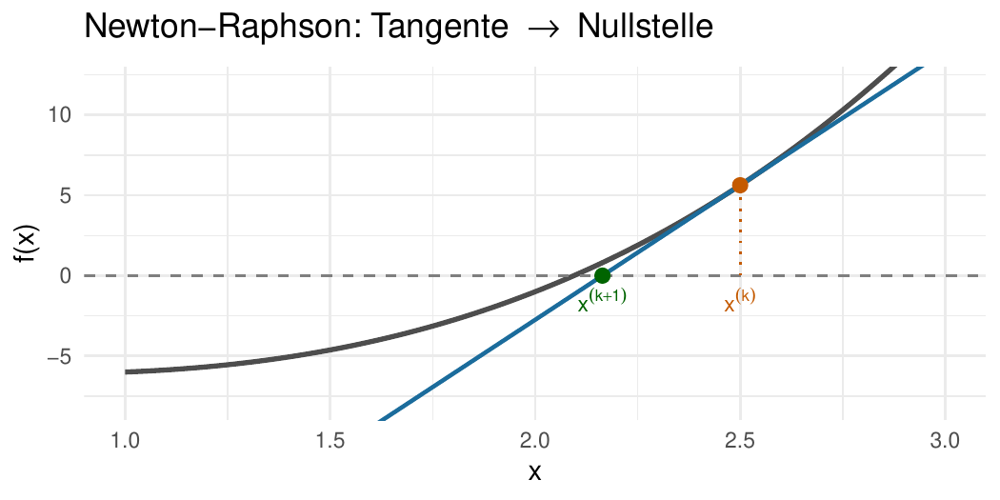
Heute:
Am Minimum gilt \(\nabla f(\bx^\star) = \bnull^\top\).
\(\implies\) Newton-Optimierung = Newton-Raphson, angewandt auf die Gleichung \(\nabla f(\bx) = \bnull^\top\)!
Problem bei GD:
Berücksichtigt nur die Steigung, nicht die Krümmung
\(\to\) approximiert \(f\) lokal durch Tangente (Taylor 1. Ordnung)
Newton-Idee:
Approximiere \(f\) lokal durch eine Parabel (Taylor 2. Ordnung): \[f(\bx + \bh) \approx \cgreen{f(\bx) + \nabla f(\bx) \bh + \frac{1}{2} \bh^\top \bH_f(\bx) \bh}\]
\(\to\) Minimiere diese Approximation bzgl. \(\bh\): \[\cblue{\nabla_{\bh}}\left[\cgreen{\ldots}\right] = \cgreen{\nabla f(\bx) + \bh^\top \bH_f(\bx)} \overset{!}{=} \bnull^\top\quad\iff\quad \bh = -\bH_f(\bx)^{-1} \nabla f(\bx)^\top\]
Newton-Schritt In Iteration \(k\) wird der nächste Punkt \(\bx^{(k+1)}\) berechnet als: \[\bx^{(k+1)} = \bx^{(k)} - \bH_f\left(\bx^{(k)}\right)^{-1} \nabla f\left(\bx^{(k)}\right)^\top\]
| Nullstellensuche | Optimierung |
|---|---|
| Löse \(f(x) = 0\) | Löse \(\nabla f(\bx) = \bnull^\top\) |
| \(x^{(k+1)} = x^{(k)} - \frac{f(x^{(k)})}{f'(x^{(k)})}\) | \(\bx^{(k+1)} = \bx^{(k)} - \bH_f^{-1} \nabla f(\bx^{(k)})^\top\) |
\(\implies\)
Newton für Optimierung \(\simeq\) Newton-Raphson für \(\cgreen{g(\bx) := \nabla f(\bx)^\top} = \bnull\)
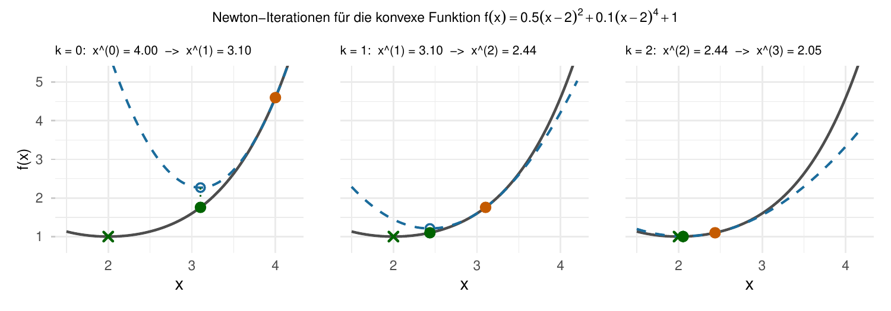
orange: aktueller Punkt
blau gestrichelt: quadratische Taylor-Approximation \(T_2\)
grün: nächster Iterationspunkt.
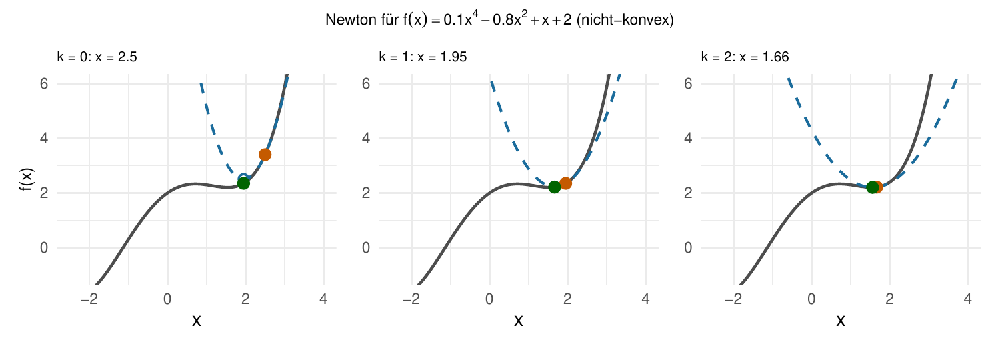
Bei nicht-konvexen Funktionen kann Newton auch zu beliebigen lokalen oder globalen kritischen Punkten — also auch Sattelpunkten oder Maxima — konvergieren.
Problem:
Hesse-Matrix \(\bH_f(\bx)\) ist teuer zu berechnen, zu speichern (\(O(n^2)\)!) und zu invertieren (\(O(n^3)\)!).
Idee:
Approximiere \(\bH_f^{-1}\) iterativ aus Gradienten-Informationen!
Quasi-Newton-Update Der nächste Punkt \(\bx^{(k+1)}\) wird berechnet als:
\[\bx^{(k+1)} = \bx^{(k)} - \gamma_k \bB_k \nabla f\left(\bx^{(k)}\right)^\top,\]
wobei \(\bB_k \approx \bH_f^{-1}(\bx^{(k)})\) aus vorherigen Schritten geschätzt wird und \(\gamma_k\) aus einer Line Search stammt.
BFGS = Broyden–Fletcher–Goldfarb–Shanno
Aktualisiert \(\bB_k\) so, dass die Sekantenbedingung \(f''(x) \approx \frac{f'(x_{k+1}) - f'(x_k)}{x_{k+1} - x_k}\) erfüllt ist: \[\bB_{k+1} \underbrace{\left(\nabla f(\bx^{(k+1)}) - \nabla f(\bx^{(k)})\right)^\top}_{\by_k} = \underbrace{\bx^{(k+1)} - \bx^{(k)}}_{\bs_k}\]
| Eigenschaft | Nelder-Mead | Gradientenabstieg | Quasi-Newton | Newton |
|---|---|---|---|---|
| Verfahren | 0. Ordnung | 1. Ordnung | “1.5te” Ordnung | 2. Ordnung |
| Benötigt | nur \(f\) | \(f, \nabla f\) | \(f, \nabla f\) | \(f, \nabla f\), \(\bH_f\) |
| Komplexität/Schritt | \(O(n)\) | \(O(n)\) | \(O(n^2)\) | \(O(n^3)\) |
| Konvergenz | Keine Garantie | Linear\(^\times\) | Superlinear\(^\times\) | Quadratisch\(^\times\) |
| Schrittweite | Autom. | Kritisch (\(\gamma\)) | line search | Autom. |
| Skalierbarkeit | Schlecht (\(n \leq 10\)) | Sehr gut | Gut | Schlecht |
\(\times\): Konvergenzaussagen gelten lokal bzw. für glatte, stark konvexe Zielfunktionen und geeignete Schrittweiten/Line Search.
Rs optim(); nützlich, wenn keine Ableitungen verfügbarR: optim(..., method = "BFGS"), guter Kompromiss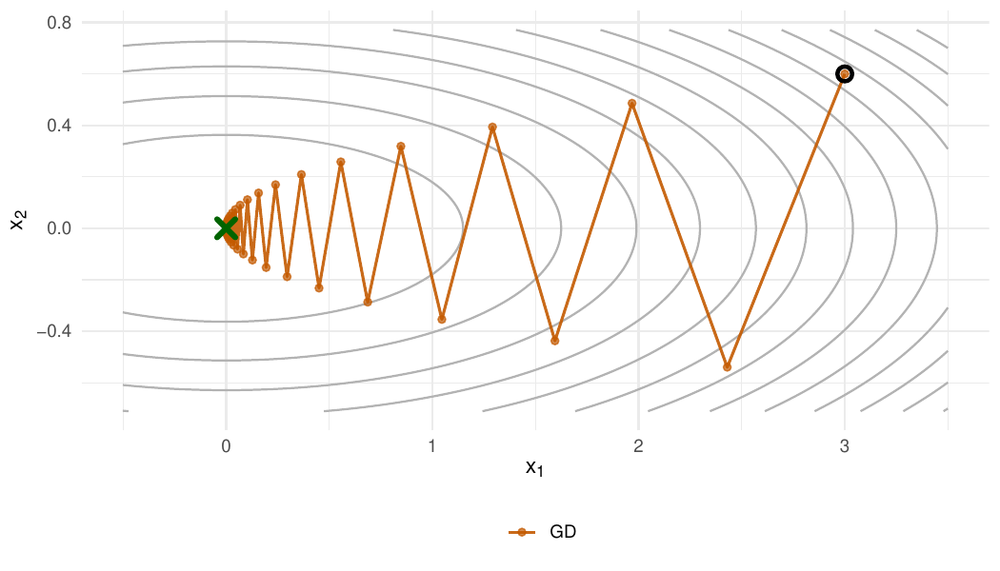
Bei hoher Konditionszahl \(\kappa\left(\bH_f \right)\) oszilliert GD oft stark.
Analogie:
Eine Kugel, die einen Hügel herunterrollt, sammelt Schwung (momentum). Ihre Bewegung wird dann nicht durch jede kleine Unebenheit beeinflusst, sondern durch die mittlere Steigung.
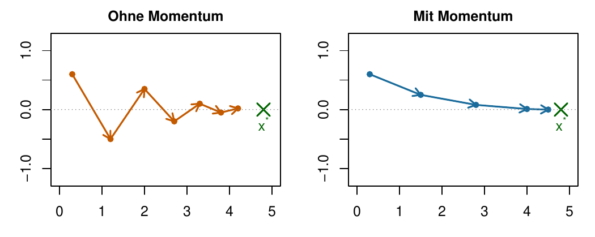
Momentum dämpft Oszillationen und beschleunigt konsistente Richtungen.
Momentum-Update Benutzt wird nicht mehr nur die aktuelle Steigung \(\nabla f\left(\bx^{(k)}\right)^\top\), sondern ein speziell “gemittelter” Gradient \(\bv^{(k)}\): \[\begin{align*} \bv^{(k+1)} &= \alpha \bv^{(k)} - \gamma \nabla f\left(\bx^{(k)}\right)^\top \\ \bx^{(k+1)} &= \bx^{(k)} + \bv^{(k+1)} \end{align*}\]
Wirkung:
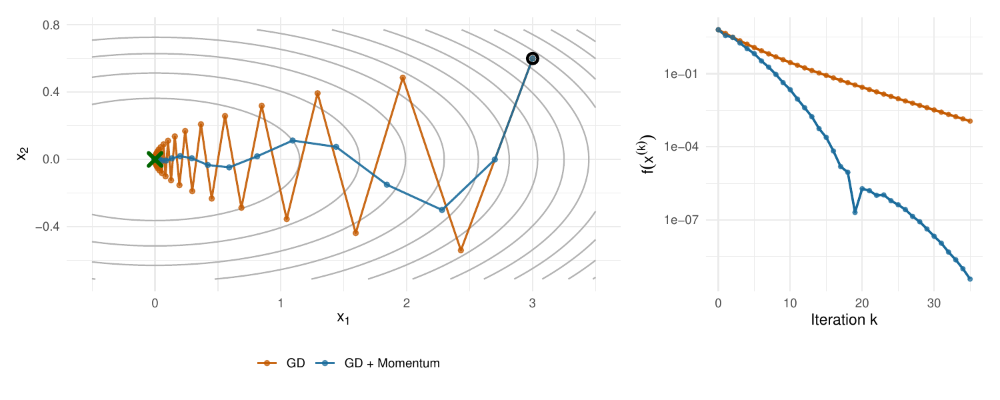
s.a. Shiny-App
Typisches ML/Statistik-Problem:
Minimiere das empirische Risiko \[R(\btheta) := \frac{1}{N}\sum_{i=1}^N L(y_i, p_\btheta(\bx_i))\]
Problem: \[\nabla R(\btheta) = \frac{1}{N}\sum_{i=1}^N \nabla L(y_i, p_\btheta(\bx_i))\]
Jeder Schritt erfordert Berechnung aller \(N\) Gradienten \(\to\) sehr teuer!
Idee:
Gradient eines zufälligen Datenpunkts \(\nabla L(y_i, p_\btheta(\bx_i))\) ist ein unverzerrter Schätzer: \[\E_{i \,\sim\, \text{Unif}\{1, \ldots, N\}}\left[\nabla L(y_i, p_\btheta(\bx_i))\right] = \nabla R(\btheta)\] (Erwartungswert nur über die Ziehung des Index \(i\) — bei festem Datensatz und festem \(\btheta\))
SGD-Update Wähle zufälligen Index \(i_k\): \[\btheta^{(k+1)} = \btheta^{(k)} - \gamma^{(k)} \nabla L\left(y_{i_k}, p_{\btheta^{(k)}}\left(\bx_{i_k}\right)\right)^\top\]
In der Praxis:
Verwende Mini-Batches: Gradient bestimmt aus Stichproben von \(n \ll N\) Datenpunkten (oft: 32–256)
Mini-Batch-Gradientenverfahren sind die Grundlage fast des gesamten aktuellen NN-Trainings.
Weiterführend:
MSc-Kurs Optimization for ML behandelt Adam, Muon & Co, learning rate schedules, etc.
Bisher: Unbeschränkte Optimierung \(\min_\bx f(\bx)\) für \(f: \R^n \to \R.\)
Oft haben wir aber Einschränkungen, z.B.:
Allgemeines Problem mit Nebenbedingungen \[\begin{align*} \min_\bx \quad & f(\bx) & \text{(Zielfunktion)} \\ \text{u.d.N.} \quad & g_i(\bx) = 0, \; i = 1, \ldots, m & \text{(Gleichungen)} \\ & h_j(\bx) \leq 0, \; j = 1, \ldots, p & \text{(Ungleichungen)} \end{align*}\]
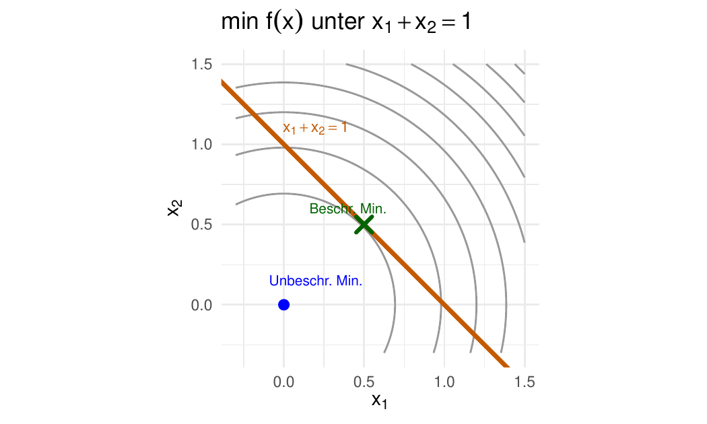
Hier also: \(g(\bx) = x_1 + x_2 - 1\). Das beschränkte Optimum liegt auf der Nebenbedingung!
Intuition:
Idee: Am Optimum \(\bx^\star\) auf \(g(\bx) = 0\) muss also gelten:
\[\nabla f(\bx^\star)\text{ ist parallel zu } \nabla g(\bx^\star)\] \[\implies\;\exists\, \lambda \in \R \text{ mit }\nabla f(\bx^\star) + \lambda \nabla g(\bx^\star) = \bnull^\top\]
Lagrange-Funktion \[\Lcal(\bx, \blambda) = f(\bx) + \blambda^\top \bg(\bx)\] mit \(\bg(\bx) = \begin{pmatrix} g_1(\bx) \\ \vdots \\ g_m(\bx) \end{pmatrix}\) und \(\blambda = \begin{pmatrix} \lambda_1 \\ \vdots \\ \lambda_m \end{pmatrix}\)
Notwendige Bedingung (Lagrange) Sind die \(\nabla g_i(\bx^\star)\) linear unabhängig, existiert am Optimum \(\bx^\star\) ein \(\blambda^\star\) mit: \[\nabla_\bx \Lcal(\bx^\star, \blambda^\star) = \bnull^\top \quad \text{und} \quad \bg(\bx^\star) = \bnull\]
Problem:
Minimiere \(\cgreen{f(x, y) = x^2 + y^2}\) unter \(\cred{g(x, y) = x + y - 1 = 0}\).
Lagrange-Funktion:
\[\Lcal(x, y, \lambda) = \cgreen{x^2 + y^2} + \cred{\lambda(x + y - 1)}\]
Notwendige Bedingungen:
\[\begin{align*}
\frac{\partial \Lcal}{\partial x} =& \;\cgreen{2x} + \cred{\lambda} = 0 \quad &\Rightarrow& \quad x = -\lambda/2 \\
\frac{\partial \Lcal}{\partial y} =& \;\cgreen{2y} + \cred{\lambda} = 0 \quad &\Rightarrow& \quad y = -\lambda/2 \\
\frac{\partial \Lcal}{\partial \lambda} =&\; \cred{g(x, y) = x + y - 1} = 0 \quad &\Rightarrow& \quad -\lambda = 1
\end{align*}\]
Lösung: \(x^\star = y^\star = \frac{1}{2}\), \(\lambda^\star = -1\), \(f(x^\star, y^\star) = \frac{1}{2}\)
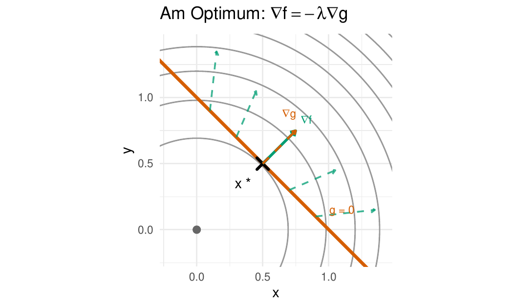
\[\cgreen{\nabla f(x,y)=(2x,2y)}; \; \cred{\nabla g(x,y)=(1,1)}\]
Bei Ungleichungs-Nebenbedingungen \(h_j(\bx) \leq 0\) wird es komplizierter.
Karush-Kuhn-Tucker (KKT) Bedingungen Für das Problem \[\min f(\bx) \text{ u.d.N. } g_i(\bx) = 0, h_j(\bx) \leq 0\] gelten am Optimum \(\bx^\star\):
Komplementarität bedeutet:
Für jede Ungleichung gilt
Genauer: notwendig sind die KKT-Bedingungen für differenzierbare \(f, g_i, h_j\) unter weiterenRegularitätsbedingungen an die Nebenbedingungen.
Problem: \(\min_x f(x) = (x - 3)^2\) unter \(0 \leq x \leq 2\), umformuliert: \(\cblue{h_1(x) = -x \leq 0}\), \(\cred{h_2(x) = x - 2 \leq 0}\)
KKT-Bedingungen:
Lösung:
\(x^\star = 2\) (am rechten Rand), mit \(\cblue{\mu_1 = 0}\), \(\cred{\mu_2 = 2}\)
\(\implies\) Obere Schranke ist aktiv (bindet), untere ist inaktiv.
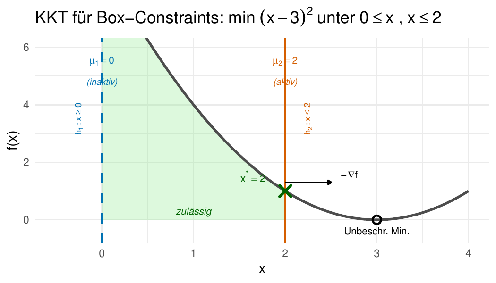
Am Optimum \(x^\star = 2\):
neg. Gradient \(-\nabla f(x^\star) = -2(x^\star-3) = 2\) zeigt nach rechts (Richtung des unbeschränkten Minimums), aber die aktive Schranke \(\cred{h_2}\) blockiert weitere Bewegung.
Regularisierte Regression lässt sich als beschränkte Optimierung formulieren:
Ridge / Lasso (äquivalente Formulierungen) \[\begin{align*} \text{Penalisiert:} \quad & \min_{\bbeta} \left(\|\by - \bX\bbeta\|_2^2 + \lambda \|\bbeta\|_p^p\right) \\[0.5ex] \text{Beschränkt:} \quad & \min_{\bbeta} \|\by - \bX\bbeta\|_2^2 \quad \text{u.d.N.} \quad \|\bbeta\|_p^p \leq c \end{align*}\] mit \(p = 2\) (Ridge) bzw. \(p = 1\) (Lasso).
Lagrange-Funktion:
\(\Lcal(\bbeta, \mu) = \|\by - \bX\bbeta\|_2^2 + \mu\left(\|\bbeta\|_p^p - c\right)\)
KKT-Stationarität für Ridge (\(p=2\)):
\[\nabla_\bbeta \Lcal^\top = -2\bX^\top(\by - \bX\bbeta) + 2\mu\bbeta = \bnull \implies \wh\bbeta_{\text{Ridge}} = (\bX^\top\bX + \mu\bI)^{-1}\bX^\top\by\]
Für jedes \(\lambda > 0\) existiert ein \(c > 0\), sodass beide Formulierungen dieselbe Lösung haben —
umgekehrt nur, solange die Nebenbedingung auch bindet (ist der KQ-Schätzer selbst zulässig, erzwingt die Komplementarität \(\mu = 0\)).
Die Zuordnung \(\lambda \leftrightarrow c\) hängt von den Daten ab.
Proposition
Sei \(f\colon \R^n \to \R\) konvex.
Dann gibt es für jedes \(\bx \in \R^n\) einen Vektor \(\bv \in \R^n\), sodass \[\begin{align*}
f(\by) \ge f(\bx) + \bv^\top (\by - \bx) \quad \forall \by \in \R^n.
\end{align*}\]

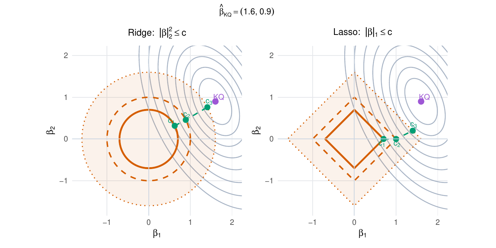
Grau: Höhenlinien \(f(\bbeta) = \|\by - \bX\bbeta\|_2^2\); Lila: \(\arg\min f(\bbeta)\); Grün: Lösung unter Nebenbedingungen.
Achtung:
\(\|\bbeta\|_1\) ist an den Ecken nicht differenzierbar — die KKT-Stationarität gilt fürs Lasso nur mit Subgradienten.
In der Praxis verwendet man Subgradienten- bzw. Proximal-Verfahren.
optimizeUnivariat: optimize() für \(f: \R \to \R\)
optimMultivariat: optim() für \(f: \R^n \to \R\)
f <- function(x) log1p((x[1]^2 + sin(3*x[2]))^2) +
.1 * x[1]^2 + .1 * x[2]^2
optim(c(-1, -0.5), f, method = "Nelder-Mead") |> #default
str()List of 5
$ par : num [1:2] 5.54e-05 7.49e-06
$ value : num 8.18e-10
$ counts : Named int [1:2] 123 NA
..- attr(*, "names")= chr [1:2] "function" "gradient"
$ convergence: int 0
$ message : NULLList of 5
$ par : num [1:2] 6.88e-10 2.11e-10
$ value : num 4.52e-19
$ counts : Named int [1:2] 47 29
..- attr(*, "names")= chr [1:2] "function" "gradient"
$ convergence: int 0
$ message : NULL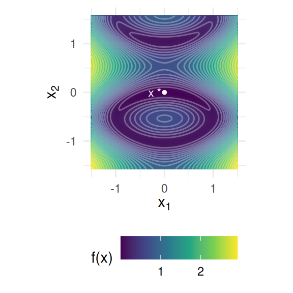
optim: (Falsche) KonvergenzStartwerte weit weg vom globalen Minimum \(\bx^\star = (0,0)\) bzw. zu kleines Iterationslimit:
# DANGER: Konvergenz zu lokalen Minima
optim(c(-1, 1), f)[1:2] |> str()
optim(c(-.5, -1), f, method = "BFGS")[1:2] |> str()List of 2
$ par : num [1:2] 8.81e-05 1.04
$ value: num 0.108
List of 2
$ par : num [1:2] -1.54e-05 -1.04
$ value: num 0.108# DANGER: Keine Konvergenz aber keine warnings():
optim(c(-1, -0.5), f, control = list(maxit = 50)) |> str()List of 5
$ par : num [1:2] -0.584 -0.151
$ value : num 0.0454
$ counts : Named int [1:2] 51 NA
..- attr(*, "names")= chr [1:2] "function" "gradient"
$ convergence: int 1
$ message : NULL\(\implies\) convergence = 0 heißt nur: Abbruchkriterium erfüllt — keine Garantie für ein (globales) Minimum!
optim: Mit Gradienten oder Constraintsgrad_f <- function(x) {
log1p_dx <- 1 / (1 + (x[1]^2 + sin(3*x[2]))^2)
c((4 *x[1]*(x[1]^2 + sin(3*x[2]))) * log1p_dx + .2 * x[1],
(6 *cos(3*x[2])*(x[1]^2 + sin(3*x[2]))) * log1p_dx + .2 *x[2])
}
str(optim(c(-1, -0.5), f, gr = grad_f, method = "BFGS")[-5])List of 4
$ par : num [1:2] 6.88e-10 2.11e-10
$ value : num 4.52e-19
$ counts : Named int [1:2] 47 29
..- attr(*, "names")= chr [1:2] "function" "gradient"
$ convergence: int 0List of 4
$ par : num [1:2] 8.71e-07 2.65e-08
$ value : num 8.22e-14
$ counts : Named int [1:2] 14 14
..- attr(*, "names")= chr [1:2] "function" "gradient"
$ convergence: int 0\(\to\) Analytischer Gradient schneller und genauer als numerische Approximation über finite Differenzen. \(\to\) L-BFGS-B erlaubt Box-Nebenbedingungen (KKT!).
Frage 1: Newton-Schritt für \(f(x) = x^2 + 2\) mit \(x^{(0)} = 4\): Was ist \(x^{(1)}\)?
Frage 2: Welche Aussage über die KKT-Bedingungen ist falsch?
Frage 3: optim() liefert convergence = 0. Was wissen wir?
| Methode | Wann verwenden? |
|---|---|
| Bisektion / Newton-Raphson | Nullstellen \(f(x) = 0\), univariat |
| Nelder-Mead | Keine Ableitungen, niedrige Dimension (\(n \leq 10\)) |
| Gradient Descent | Große Probleme, einfache Implementierung |
| Momentum | GD + schlecht konditionierte Probleme |
| SGD | Sehr große Datensätze & große Dimension |
| Quasi-Newton (BFGS) | Mittlere Probleme, guter Kompromiss |
| Newton | Kleine Probleme, schnelle Konvergenz nötig |
| Lagrange/KKT | Nebenbedingungen |
Kernideen der beiden Optimierungs-Sitzungen:
Nächste Vorlesung: Funktionsapproximation
Wann Momentum verwenden?
Verbindung zur Konvexität: